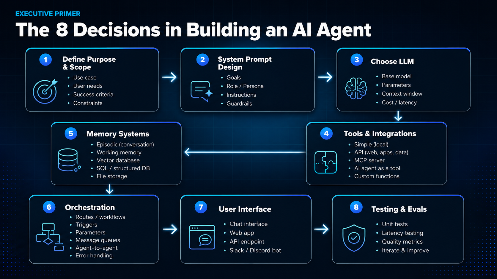

Building a production AI agent comes down to eight discrete decisions. Each one shapes how the agent performs at scale, and most of them have nothing to do with the underlying language model.
One quick distinction first: a single AI agent handles one well-defined task end to end (triaging tickets, drafting emails). Agentic AI describes systems where multiple specialized agents coordinate under an orchestrator. The cleanest way to picture the difference for a non-technical audience: an AI agent is the analyst who answers a specific question; agentic AI is the chief of staff who runs the whole process and comes back with a recommendation. The eight steps below apply to either; only how many times you work through them changes.

1Define Purpose & Scope
Start with one page that captures four things: the use case, the user need, the success criteria, and the constraints. The use case names the verb (drafting, triaging, scheduling, escalating). The user need names the customer (the rep, the analyst, the support agent). Success ties the project to a metric a steering committee will recognize. Constraints set the budget and the guardrails. These four answers anchor every decision that follows.
2System Prompt Design
The system prompt is the agent's job description. Four building blocks: goals (what to optimize for), role and persona (how it speaks), instructions (the specific procedure), and guardrails (what it must refuse). Prompt design carries real leverage: a well-engineered prompt can move accuracy by ten or more percentage points without changing the underlying model. Treat it with the same care as the rest of the stack.
3Choose LLM
Four trade-offs determine model choice: base model capability, parameters (size and version), context window, and cost or latency. There is no universally "best" model. There is only the right model for this agent's job. A customer-support triage agent answering fifty thousand tickets a day needs a different model than a quarterly financial-analysis agent that runs twice a year. The defensible default is to run a smaller, cheaper model in production and reserve a larger one for the cases where evaluation data shows it actually matters.
4Tools & Integrations
Tools turn an agent from a conversational model into an executor. They come in five flavors: simple local functions (math, file operations), API calls to web apps and data systems, MCP servers (the emerging open standard for tool exposure), other agents called as tools, and custom functions written for the specific use case. The leverage decision here is governance, not engineering. Start with two or three high-value tools, get them right, and expand as evaluation data justifies it.
5Memory Systems
Memory is what turns a one-turn chatbot into something that compounds across uses. Five distinct memory types matter at the infrastructure layer, and most teams conflate them: episodic memory (the running record of the conversation), working memory (the active thinking buffer for the current task), vector databases (for semantic retrieval over unstructured content), structured databases (for facts, records, and transactions), and file storage (for documents and assets). The architectural question is rarely "do we need memory?" It is "which kind, and how do we keep it from going stale?"
A useful second lens is to think about memory by duration and access pattern. Working memory holds the current task and disappears at session end. Episodic memory carries recent interactions forward, enabling continuity across a longer process. Context files are the readable text documents a user attaches to the agent itself: a resume in a job-search agent, a brand voice guide in a marketing agent, the files pinned to a Claude Project. The user can open and edit them outside the agent, but from the agent's runtime view they are fixed. They load every run and shape everything the agent does. Long-term knowledge sits in a vector store or enterprise database and is retrieved on demand when the agent's question matches it. The architectural principle: design the memory layer alongside steps 1 through 4, not after. Memory choices made at architecture time evolve far more cleanly than ones retrofitted later.
6Orchestration
Orchestration is everything that happens between the user's request and the model's response. Six concerns to design for: routes and workflows (which model or sub-agent handles what), triggers (what kicks the agent off in the first place), parameters (runtime settings that govern behavior), message queues (so the system holds up under load), agent-to-agent handoffs (how multi-agent systems coordinate), and error handling (what happens when something breaks). This is the layer that determines whether the agent runs reliably at production scale. The model is the engine; orchestration is the rest of the car.
Open-source frameworks like LangGraph, CrewAI, and AutoGPT are excellent for prototyping orchestration patterns quickly, and worth reaching for early in a build. For production, plan in advance for the enterprise governance layer above them: access controls, observability, audit trails, and rollback capability. Including these in the roadmap from the start is far simpler than adding them later.
7User Interface
An agent has to land somewhere a human can use it. Four surfaces dominate enterprise deployments: chat interfaces, embedded web apps, raw API endpoints (for developers and downstream systems), and the messaging platforms employees already live in like Slack and Teams. The interface decision is primarily about adoption. Meet users where they already work, and uptake follows.
8Testing & Evals
Continuous evaluation is what keeps stakeholder trust over time. A real evaluation stack has four parts: unit tests for the tools and prompts, latency testing under realistic load, quality metrics that map back to the success criteria from step 1, and a documented loop for iterating when the metrics drift. Build the eval layer alongside the agent itself rather than after; early evaluation catches issues in week one rather than week ten.
Putting the framework to work
The framework provides a shared vocabulary. When a vendor pitches an "AI agent platform," ask which of the eight layers it owns and which it expects you to bring. When an internal team proposes building an agent, ask where they are in the eight steps before they ship. When a board member asks how a competitor's agent compares to yours, the answer will almost always live in one of these boxes, not in the model itself.
Right-sizing the system matters as much as choosing the technology. A focused single agent can solve a well-defined task cleanly in two weeks. A multi-agent orchestrated system is the right shape when the workflow spans systems, teams, and adaptive decisions. Naming which problem you have before you start building is one of the highest-leverage decisions in the framework.
The pragmatic enterprise pattern is to do both, sequenced. Most roadmaps that work start with a focused single-agent project to prove value and build trust, then layer in multi-agent orchestration as data foundations and delivery capability mature. The choice follows the problem, not the technology preference.
At FutureInSites, this framework is how we open every agent engagement. The clients who get the most value invest deliberately in step 1 (purpose and scope) and step 8 (evaluation). Those two anchor every decision in between.